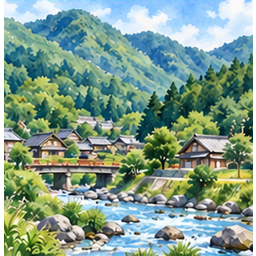
安芸太田町
あきおおたちょう ・ ID 20
やまにあってしぜんがとてもゆたかなまち。
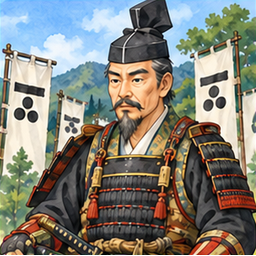
安芸高田市
あきたかたし ・ ID 22
戦国武将の毛利元就ゆかりのまち。
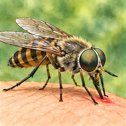
虻
あぶ ・ ID 88
人や動物の血をすうことがあるハエの仲間。
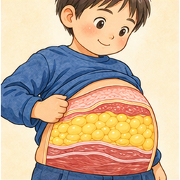
脂
あぶら ・ ID 90
からだの中にある、あぶらの成分。
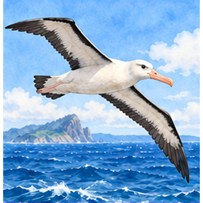
阿呆鳥
あほうどり ・ ID 97
うみにすむ大きなとり
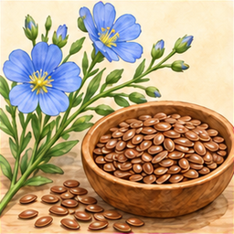
亜麻仁
あまに ・ ID 107
あまというしょくぶつのたね
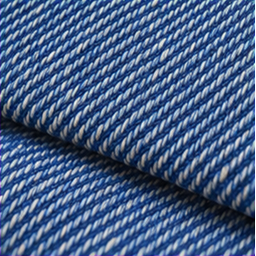
綾綾
あやあや ・ ID 129
あやおりのきじのこと
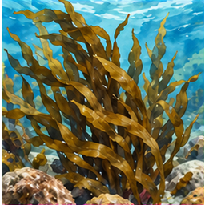
荒目
あらめ ・ ID 154
海に生える褐色の海藻。食べ物にも使われる。
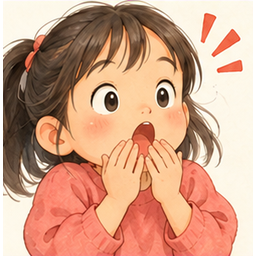
あらら
あらら ・ ID 156
びっくりしたときにでるこえ
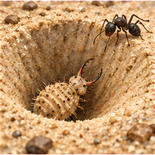
蟻地獄
ありじごく ・ ID 163
ありをとらえるむし
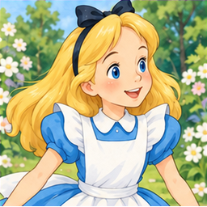
アリス
ありす ・ ID 164
女の子につける名前の一つ。
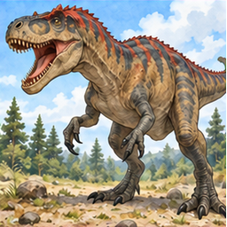
アロサウルス
あろさうるす ・ ID 181
肉を食べていた大きな恐竜。
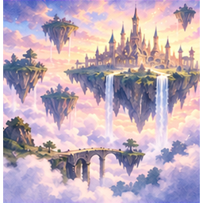
異界
いかい ・ ID 206
この世とはちがう世界。
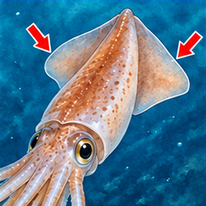
烏賊耳
いかみみ ・ ID 211
イカの胴の両側にある、ひれのような部分。
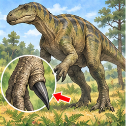
イグアノドン
いぐあのどん ・ ID 237
親指のつめがするどくとがっている、くさをたべるきょうりゅう。
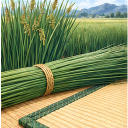
藺草
いぐさ ・ ID 238
たたみにつかうくさ
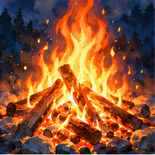
イグニス
いぐにす ・ ID 240
火という意味のことば
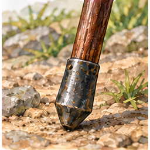
石突き
いしづき ・ ID 275
杖や槍の石突き。
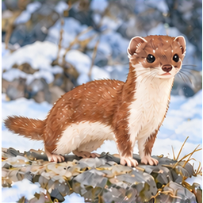
いずな
いずな ・ ID 295
おこじょににている小動物
面
つら ・ ID 298
人の顔。ふだんの会話では「顔」ということが多い。
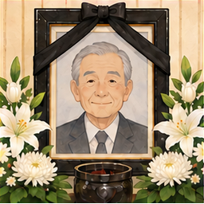
遺像
いぞう ・ ID 305
亡くなった人の肖像。
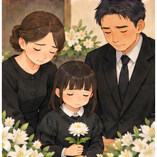
遺族
いぞく ・ ID 306
なくなったひとのごかぞく。
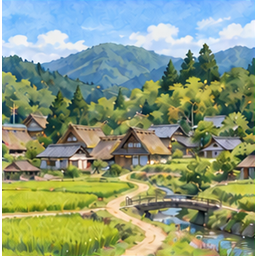
一村
いっそん ・ ID 377
一つの村。
色男
いろおとこ ・ ID 438
顔立ちがよく、魅力のある男性。
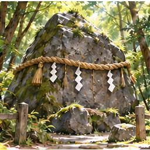
磐座
いわくら ・ ID 447
神が宿るといわれる岩。
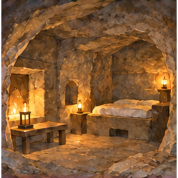
岩室
いわむろ ・ ID 457
岩の中や岩を掘って作った部屋。
インテリ
いんてり ・ ID 475
知識があり、頭のよい人。
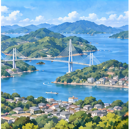
因島町
いんのしま ・ ID 479
しまなみ海道にある広島県尾道市の島。
イーグレット
いーぐれっと ・ ID 484
とりのかざり。
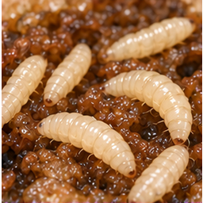
蛆
うじ ・ ID 511
はえのあかちゃん。
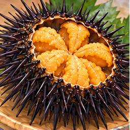
海胆
うに ・ ID 558
ウニの体の中にある、食べる部分。
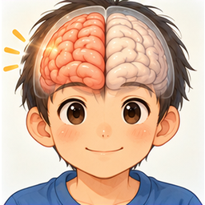
右脳
うのう ・ ID 560
脳の右側。
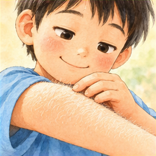
産毛
うぶげ ・ ID 564
からだにはえているうすくてやわらかいけ。
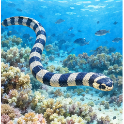
海蛇
うみへび ・ ID 573
うみにすむへびのような生き物。
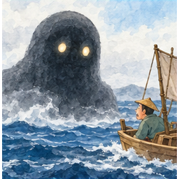
海坊主
うみぼうず ・ ID 575
海にすむようかい。
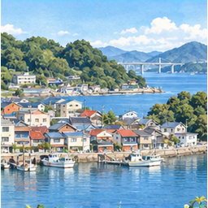
浦崎町
うらさき ・ ID 583
おのみちしのひがしにある、うみのまち。
うらしまたろう
うらしまたろう ・ ID 584
竜宮城へ行った男の子が出てくる日本の昔話。
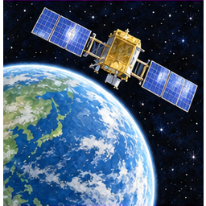
衛星
えいせい ・ ID 627
惑星や地球のまわりを回る天体や人工物。
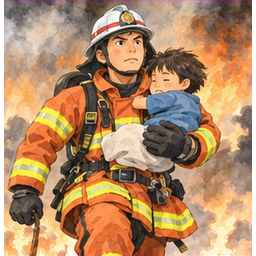
英雄
えいゆう ・ ID 633
人々を助ける勇気ある人。
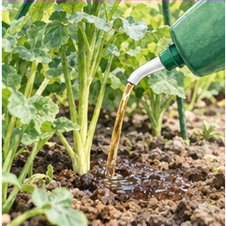
液肥
えきひ ・ ID 647
液体の肥料。
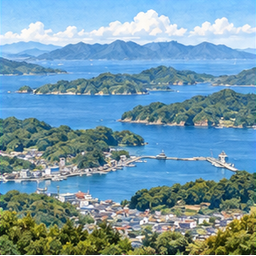
江田島市
えたじまし ・ ID 654
うみにかこまれた、いりぐちがうつくしいまち。
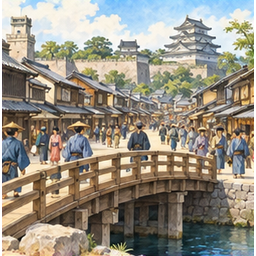
江戸
えど ・ ID 662
むかしのとうきょうのなまえ。
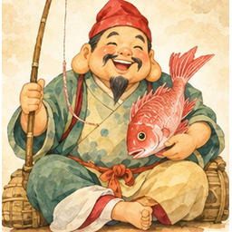
恵比須
えびす ・ ID 673
商売や漁業の神として信仰される七福神の一人。
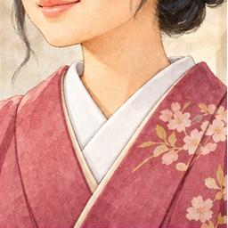
衣紋
えもん ・ ID 677
きもののえりもと。
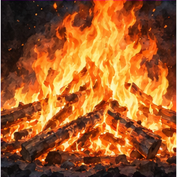
炎火
えんか ・ ID 697
燃え上がる火。
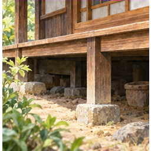
縁下
えんか ・ ID 698
家の縁側の下にある空間。
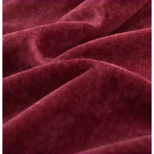
臙脂
えんじ ・ ID 722
黒みがかった赤色。
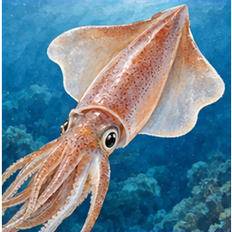
エンペラ
えんぺら ・ ID 748
イカやタコについている、ひらひらしたからだのぶぶん。
王地
おうち ・ ID 762
王が治める土地。
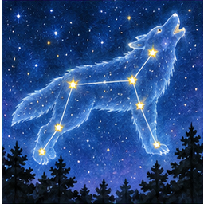
狼座
おおかみざ ・ ID 769
よぞらにみえるほしのあつまり。
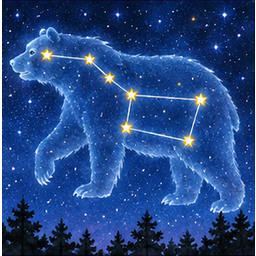
大熊座
おおぐまざ ・ ID 774
よぞらにみえるほしのあつまり。
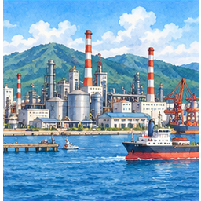
大竹市
おおたけし ・ ID 779
こうじょうがたくさんあるうみのまち。
大手
おおて ・ ID 782
規模の大きな会社。
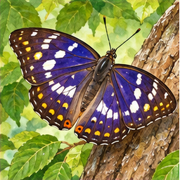
オオムラサキ
おおむらさき ・ ID 791
にほんのくにのちょう
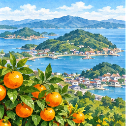
大崎上島町
おさきかみじまちょう ・ ID 821
うみにある、みかんがおいしいしまのまち。
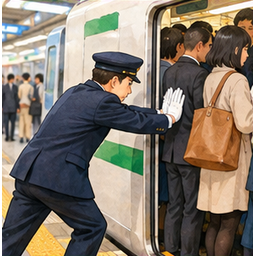
押し屋
おしや ・ ID 831
でんしゃにおすひと
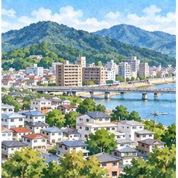
海田町
かいたちょう ・ ID 1004
ひろしましのとなりにあるまち。
火器
かき ・ ID 1024
ひをつかうどうぐやぶきのこと
風邪
かぜ ・ ID 1066
せきや熱が出る、鼻やのどの感染症。
帷子
かたびら ・ ID 1076
裏地のない、薄い着物。
形見
かたみ ・ ID 1078
亡くなった人が残した品物。
活性炭
かっせいたん ・ ID 1087
においや汚れを吸着する、細かな穴の多い炭。
株価
かぶか ・ ID 1132
株を売り買いするときの値段。
株主
かぶぬし ・ ID 1136
会社の株を持っている人。
神
かみ ・ ID 1157
神社などでまつられる神。
彼氏
かれし ・ ID 1227
付き合っている男性。
関
かん ・ ID 1252
昔、通行人や荷物を調べるために道に設けた場所。
館員
かんいん ・ ID 1256
たてもののひと
棺桶
かんおけ ・ ID 1258
亡くなった人を納める箱。
幹線
かんせん ・ ID 1290
地域をつなぐ、幅の広い主要な道路。
関税
かんぜい ・ ID 1291
外国から品物を輸入するときにかかる税金。
ガス
がす ・ ID 1304
燃料や暖房などに使う気体。
ガソリン
がそりん ・ ID 1309
石油から作られる、自動車などの燃料。
気圧
きあつ ・ ID 1361
空気が周りの物を押す力。
気候
きこう ・ ID 1389
一年を通した、その土地の天気の特徴。
北広島町
きたひろしまちょう ・ ID 1412
スキーじょうがある、さむいけどたのしいまち。
君
きみ ・ ID 1441
相手を親しんで呼ぶ言葉。また、目下の人に使う呼び方。
肝
きも ・ ID 1447
肝臓。また、物事の最も大切な部分。
規約
きやく ・ ID 1454
団体などで、みんなが守る決まり。
境界
きょうかい ・ ID 1556
土地や国などの境目。
凶器
きょうき ・ ID 1558
人を傷つけたり、おどしたりするための道具。
切り札
きりふだ ・ ID 1593
ここぞという場面で使う、強い札や手段。
キリマンジャロ
きりまんじゃろ ・ ID 1594
アフリカにある、とてもたかいやま。
菌
きん ・ ID 1609
目に見えないほど小さな生き物。
ギガノトサウルス
ぎがのとさうるす ・ ID 1635
大きな体を持つ、肉食の恐竜。
区
く ・ ID 1665
市役所などが管理する、町を分けた区域。
空軍
くうぐん ・ ID 1674
航空機を使って戦う軍隊。
クエン酸
くえんさん ・ ID 1681
レモンや梅干しのすっぱさのもとになる成分。
公家
くげ ・ ID 1686
昔の日本で、朝廷に仕えた貴族。
口癖
くちぐせ ・ ID 1710
何かあるたびに、つい言ってしまう言葉。
国
くに ・ ID 1725
人々が集まり、決まりを作って暮らす領域。
国境
くにざかい ・ ID 1726
国と国との間の境目。
くのいち
くのいち ・ ID 1730
女性の忍者を指す言葉。
熊野町
くまのちょう ・ ID 1738
ふでづくりがゆうめいなまち。
区民
くみん ・ ID 1746
区に住んでいる人。
クラッチ
くらっち ・ ID 1764
エンジンの動力を車輪に伝えたり切ったりする部品。
鞍馬
くらま ・ ID 1766
京都にある、天狗の伝説で有名な自然豊かな山
クランク
くらんく ・ ID 1769
まっすぐな動きを回転運動に変える機械部品。
曲輪
くるわ ・ ID 1788
城の中をいくつかに分けた区画。
紅
くれない ・ ID 1793
鮮やかで深みのある赤色。
黒錆
くろさび ・ ID 1806
鉄の表面につく、鉄がぼろぼろになるのを防ぐ黒いサビ
クロナガアリ
くろながあり ・ ID 1812
種を集める習性がある、黒くて細長いアリ。
黒文字
くろもじ ・ ID 1817
よい香りがする、つまようじの材料にもなる木。
クローム
くろーむ ・ ID 1821
さびにくいメッキや、パソコンのソフトに使われる言葉のなまえ
グルタミン酸ナトリウム
ぐるたみんさんなとりうむ ・ ID 1841
うま味を加える食品添加物。
計器
けいき ・ ID 1857
温度や速さなどを測って示す道具。
競馬
けいば ・ ID 1877
馬と騎手が走る競走。またその順位を予想して賭ける競技。
軽油
けいゆ ・ ID 1881
主にディーゼルエンジンの燃料に使われる石油製品。
経路
けいろ ・ ID 1887
目的地までの道筋。また物事が進む道すじ。
化外
けがい ・ ID 1889
古い言葉で、国の政治や教えが及ばない土地を指す。
傑作
けっさく ・ ID 1911
特に優れた作品。
蹴爪
けづめ ・ ID 1931
ニワトリなどの足の後ろ側にある硬く尖った突起。
獣
けもの ・ ID 1946
人以外の哺乳類を指す言葉。
賢者
けんじゃ ・ ID 1982
知恵や優れた判断力を持つ人。
圏内
けんない ・ ID 1995
決められた範囲の中。電波の届く範囲などにも使う。
県民
けんみん ・ ID 2006
その県に住む人々。
県立
けんりつ ・ ID 2014
県が設立し、運営する学校や図書館など。
原告
げんこく ・ ID 2039
裁判（裁判所）において、相手に対して訴えを起こした本人のこと。
ゲンゴロウ
げんごろう ・ ID 2041
池のなかをスイスイとおよぐ、みずすましの仲間の虫。
原子
げんし ・ ID 2043
物質をつくる小さな粒で、種類によって性質が異なる。
現物
げんぶつ ・ ID 2052
言葉や写真だけでなく、いま目の前にある、じっさいの本物の品物のこと。
原油
げんゆ ・ ID 2055
地中から掘り出したばかりの、まだ精製されていないドロドロとしたもとの石油。
濃い
こい ・ ID 2062
味や色、においなどが、薄くなくてとても強いようす。
工学
こうがく ・ ID 2081
科学のちからを使って、生活に役立つ機械や建物を作るための学問。
後期高齢者
こうきこうれいしゃ ・ ID 2085
年齢が75歳以上になり、医療などのサポートが手厚くなるおじいちゃんやおばあちゃんのこと。
光景
こうけい ・ ID 2088
目の前に広がっている、ある場面や景色のようすのこと。
甲子園
こうしえん ・ ID 2101
兵庫県西宮市にある野球場。全国高校野球選手権大会などが開かれる。
公衆
こうしゅう ・ ID 2104
まちにいるたくさんの、特定の誰かではない一般の人々のこと（公衆電話など）。
恒星
こうせい ・ ID 2113
たいようのように、みずから光と熱を出して宇宙に輝いている星のこと。
鉱石
こうせき ・ ID 2116
山などから掘り出される、金属の成分をたくさん含んだ硬い石のこと。
酵素
こうそ ・ ID 2121
体内で、食べ物の消化などの化学反応を助ける物質。
広汎
こうはん ・ ID 2146
範囲がとても広くて、あちこちのすみずみまで行き渡っているようす。
香箱
こうばこ ・ ID 2148
お香を入れるための美しい箱、または猫が足を内側にしまって丸くなる座り方のこと。
香ばしい
こうばしい ・ ID 2149
焼いたり煎ったりした物からする、よい香り。
公費
こうひ ・ ID 2150
国や自治体などが公の目的のために使うお金。
公立
こうりつ ・ ID 2165
自治体などが設立・運営する学校や病院など。
小切手
こぎって ・ ID 2188
金額などを書いた書面を銀行に提示し、支払いを受けるための証券。
虚空
こくう ・ ID 2191
何もない空間。
国際連合
こくさいれんごう ・ ID 2196
世界の国々が集まり、国際的な問題の解決や平和などのために協力する組織。
国葬
こくそう ・ ID 2203
国が主催して行う葬儀。
穀倉
こくそう ・ ID 2204
穀物を蓄えておく倉庫。
国鳥
こくちょう ・ ID 2206
その国を代表する鳥として選ばれた種類。
国鉄
こくてつ ・ ID 2207
日本国有鉄道の略称。
国土
こくど ・ ID 2208
国の領土となっている土地。
国費
こくひ ・ ID 2211
国の予算から支出されるお金。
国民
こくみん ・ ID 2212
ある国の国籍を持つ人。
国立
こくりつ ・ ID 2215
国が設立・運営する学校や施設など。
黒竜
こくりゅう ・ ID 2216
伝説や物語に出てくる、体中が真っ黒なウロコで覆われた強くてかっこいい竜のこと。
国連
こくれん ・ ID 2217
「国際連合」のこと。一般に「国連」と略される。
ここ
ここ ・ ID 2225
自分が今立っている、この場所を指していう言葉。
孤児
こじ ・ ID 2237
親を亡くした子ども。
古代
こだい ・ ID 2256
とても昔の時代。
国家
こっか ・ ID 2262
一定の領域と人々を持ち、政府が統治する政治的なまとまり。
国会
こっかい ・ ID 2263
国民に選ばれた議員が集まり、法律や予算などを決める日本の国の機関。
酷寒
こっかん ・ ID 2264
非常に厳しい寒さ。
国境
こっきょう ・ ID 2266
国と国、または地域と地域の境目。
この
この ・ ID 2292
話し手に近いものを指す言葉。後ろに続く名詞を指すときに使う。
顳顬
こめかみ ・ ID 2317
耳の上、目の横にある頭の部分。こめかみ。
これ
これ ・ ID 2327
話し手の近くにあるものや、話題に出たものを指す言葉。
ころん
ころん ・ ID 2333
小さな物が丸い形のまま転がるさま。
昆虫
こんちゅう ・ ID 2345
頭・胸・腹の三つに分かれた体と、六本の足を持つ動物の仲間。
コンプソグナトゥス
こんぷそぐなとぅす ・ ID 2353
小型の肉食恐竜。体長は約1メートルとされる。
細菌
さいきん ・ ID 2406
目に見えないほど小さな生物。病気を起こすものもいる。
妻子
さいし ・ ID 2418
妻と子ども。
細目
さいもく ・ ID 2450
物事を細かく分けた一つ一つの項目。
榊
さかき ・ ID 2464
神棚や神社に供える常緑の木で、枝を玉串として使うこともある。
酒盛り
さかもり ・ ID 2474
人が集まり、酒を飲みながら楽しむ会。
先物
さきもの ・ ID 2486
将来の決められた時期に、あらかじめ決めた価格で売買する取引。
サクサク
さくさく ・ ID 2496
軽く歯切れよく砕ける音や、そのような食感。
酢酸
さくさん ・ ID 2497
酢の主成分となる酸性の物質。
差紙
さし ・ ID 2530
江戸時代に役所が出した呼び出し状。尋問や命令を伝えるため、指定の日に役所へ来るよう求めた。
さて
さて ・ ID 2567
話題を切り替えたり、話を先へ進めたりするときに使う言葉。
サナダムシ
さなだむし ・ ID 2579
動物の体内に寄生する、細長く平たい形の虫。
様
さま ・ ID 2602
人の名前などの後につけて、敬意を表す言葉。
五月雨
さみだれ ・ ID 2605
梅雨のころに降り続く長雨。陰暦五月ごろの雨をいう。
サミット
さみっと ・ ID 2606
各国や組織の首脳などが集まって開く重要な会議。
サヨリ
さより ・ ID 2622
細長くとがった下あごを持つ海水魚。
サルノコシカケ
さるのこしかけ ・ ID 2634
木の幹などに生える硬いきのこの総称。猿の腰掛けに見立てた名前。
参議院
さんぎいん ・ ID 2656
日本の国会をつくる議院の一つ。参議院議員の任期は六年で、解散はない。
燦々
さんさん ・ ID 2664
光が明るく輝くようす。
三者
さんしゃ ・ ID 2667
三人の人、または三つの組織や立場。
三種
さんしゅ ・ ID 2668
三つの種類。また、三種類の組み合わせ。
酸素
さんそ ・ ID 2677
元素の一つで、空気中にも含まれる気体。多くの生き物が呼吸に使う。
産地
さんち ・ ID 2686
物や作物が生産された土地や地域。
三男
さんなん ・ ID 2696
三人以上いる男きょうだいのうち、三番目の人。
三里
さんり ・ ID 2711
昔の距離の単位である里の三倍。三里はおよそ十二キロメートルにあたる。
三塁
さんるい ・ ID 2715
野球で本塁から三つ目の塁。
しいのみ
しいのみ ・ ID 2734
シイの木の実。どんぐりの一種で、加熱して食べられる。
色素
しきそ ・ ID 2749
物に色を与える成分。
尻尾
しっぽ ・ ID 2768
多くの動物で、胴体の後ろ側に続く部分。
衆議院
しゅうぎいん ・ ID 2803
日本の国会をつくる議院の一つ。議員の任期は四年だが、解散で任期が終わることがある。
消費税
しょうひぜい ・ ID 2821
商品やサービスの取引にかかる税。消費者が負担し、事業者が国などに納める。
植物
しょくぶつ ・ ID 2829
光を使って栄養分を作る生き物の一群。草や木などがある。
心臓
しんぞう ・ ID 2846
血液を全身へ送り出す筋肉でできた器官。胸の中にある。
自記温度計
じきおんどけい ・ ID 2862
時間とともに温度を自動で測り、その変化を記録する器具。
ジュゴン
じゅごん ・ ID 2891
インド太平洋の熱帯・亜熱帯の浅い海にすむ海生哺乳類。海草を主に食べる。
水温
すいおん ・ ID 2907
水の温度。
彗星
すいせい ・ ID 2915
太陽の周りを回る天体。氷やちりなどからなり、太陽に近づくと尾が見えることがある。
水素
すいそ ・ ID 2917
元素の中で最も軽い気体。燃えると酸素と結びついて水ができる。
杉
すぎ ・ ID 2945
日本などに生える針葉樹。まっすぐ伸びる木で、建築材などに使われる。
スズラン
すずらん ・ ID 2966
春に白い釣り鐘形の花をつける植物。
昴
すばる ・ ID 2994
おうし座にある星の集まり。プレアデス星団ともいう。
スピノサウルス
すぴのさうるす ・ ID 2997
背中に帆のような突起を持つ大型の肉食恐竜。
スロット
すろっと ・ ID 3034
硬貨などを入れる細長いすき間。また 絵柄をそろえて遊ぶ機械。
生物
せいぶつ ・ ID 3064
動物や植物など 命を持つもの。
成分
せいぶん ・ ID 3065
ある物質を作り上げているもとの要素。
世界
せかい ・ ID 3068
地球や人々の社会など ある範囲にあるもの全体。
設備
せつび ・ ID 3094
学校のプールや、お家のお風呂、エアコンのように、暮らしを便利にするための大きな機械や仕組み。
セミ
せみ ・ ID 3103
夏にミンミン、ジーーーと大きな声で鳴く虫。
セリ
せり ・ ID 3105
春の七草の一つ。水辺に生える食べられる草。
先祖
せんぞ ・ ID 3126
祖父母やさらに前の世代の人々。
祖
そ ・ ID 3153
家系の初めにあたる人。また 先祖。
巣窟
そうくつ ・ ID 3155
悪い人や動物などが集まっている場所。悪いことが行われる場所という意味でも使う。
そち
そち ・ ID 3182
相手を指す昔の言葉。身分が上の人が下の人に使うことが多かった。
ソラマメ
そらまめ ・ ID 3194
大きなさやに豆が入った野菜。
それ
それ ・ ID 3199
話し手から少し離れた物や事柄を指す言葉。
村長
そんちょう ・ ID 3207
村を代表し 村の仕事をまとめる人。
大気
たいき ・ ID 3227
地球を取り巻いている空気の層。
体内
たいない ・ ID 3250
体の内側。
太平洋
たいへいよう ・ ID 3255
地球上で最も広い海洋。アジアと南北アメリカなどに囲まれている。
鷹
たか ・ ID 3273
鋭いくちばしと爪を持つ 猛禽類の鳥。
宝くじ
たからくじ ・ ID 3281
番号などが当たると賞金を受け取れるくじ。
タスマニアデビル
たすまにあでびる ・ ID 3312
タスマニア島などにすむ肉食の有袋類。現生の肉食有袋類で最大。
タヌキ
たぬき ・ ID 3336
日本にすむイヌ科の動物。森林や農地の近くなどにいる。
タバコ
たばこ ・ ID 3342
タバコの葉を使った嗜好品。燃やして煙を吸う形のものなどがある。
弾
たま ・ ID 3354
銃などから発射される弾丸。
タンポポ
たんぽぽ ・ ID 3378
黄色い花を咲かせる植物。花が終わると綿毛ができ 種を風に運ばせる。
唾液
だえき ・ ID 3390
口の中に出る液体。食べ物を飲み込みやすくし 消化を助ける。
ダチョウ
だちょう ・ ID 3400
飛べない鳥。長い脚で速く走る。
ダンゴムシ
だんごむし ・ ID 3410
触れると体を丸める小さな生き物。
血
ち ・ ID 3414
血管を通って体の中を流れる液体。酸素や栄養を体の各部分に運ぶ。
地域
ちいき ・ ID 3416
ある特徴や境界によって分けられた土地のまとまり。
地質
ちしつ ・ ID 3436
土地をつくる岩石や地層の種類と その成り立ち。
知事
ちじ ・ ID 3437
都道府県を代表して行政を行う責任者。住民の選挙で選ばれる。
地中海
ちちゅうかい ・ ID 3443
ヨーロッパやアフリカなどに囲まれた海。
窒素
ちっそ ・ ID 3444
空気の約五分の四を占める気体。色もにおいもない。
地底
ちてい ・ ID 3446
地面の深いところ。
チューリップ
ちゅうりっぷ ・ ID 3493
春に大きな花を咲かせる球根植物。
チューリップ
ちゅーりっぷ ・ ID 3497
春に大きな花を咲かせる球根植物。
長
ちょう ・ ID 3499
集団や組織をまとめる人。校長や部長などの役職名にも使う。
町
ちょう ・ ID 3500
人が住み 店や建物が集まっている地域。
腸
ちょう ・ ID 3501
胃の先につながる消化器官。食べ物の消化を進めて栄養を吸収する。
超音波
ちょうおんぱ ・ ID 3502
人の耳に聞こえる範囲より高い周波数の音。イルカやコウモリなどが利用する。
長女
ちょうじょ ・ ID 3508
きょうだいの中で最初に生まれた女の子。
チョウチョ
ちょうちょ ・ ID 3510
蝶を指す親しみやすい言い方。
長男
ちょうなん ・ ID 3511
きょうだいの中で最初に生まれた男の子。
帳簿
ちょうぼ ・ ID 3514
お金や品物の出入りなどを記録しておく帳面。
チリメンジャコ
ちりめんじゃこ ・ ID 3535
小さなイワシなどの稚魚を塩ゆでして干した食品。
ちりん
ちりん ・ ID 3537
鈴などが鳴るときの軽い音を表す言葉。
チワワ
ちわわ ・ ID 3542
メキシコ原産の小型犬。
チンチラ
ちんちら ・ ID 3544
厚くやわらかな毛を持つげっ歯類。南アメリカのアンデス山脈にすむ。
津
つ ・ ID 3549
港や船着き場を表す古い言葉。
対
つい ・ ID 3550
互いに組み合わさる二つのもの。靴や手袋などの数え方にも使う。
一日
ついたち ・ ID 3552
月の一番初めの日。読みは「ついたち」。
対馬
つしま ・ ID 3589
長崎県にある島。日本と韓国の間に位置する。
辻
つじ ・ ID 3590
道が交わる場所。十字路や四つ角を指す。
つづら
つづら ・ ID 3609
竹やつるを編んで作った 衣類などを入れるかごや箱。
津波
つなみ ・ ID 3613
地震などで海底が大きく動いたときに起こる 海面の大きな波。
角
つの ・ ID 3616
シカやウシなどの頭に生える かたい突起。形や材料は動物によって異なる。
唾
つば ・ ID 3618
口の中に出る液体。食べ物を飲み込みやすくし 消化を助ける。
翼
つばさ ・ ID 3621
鳥や飛行機が空を飛ぶために使う部分。
つま
つま ・ ID 3632
刺身に添える野菜や海藻など。
積立金
つみたてきん ・ ID 3641
決まった目的のために 少しずつ積み立てておくお金。
定休日
ていきゅうび ・ ID 3681
お店などが、いつも休むと決めている日。毎週同じ曜日に休むお店などがあります。
定年
ていねん ・ ID 3691
働く人が、その職場を退職する年齢として決められた年齢。
てにをは
てにをは ・ ID 3733
「て」「に」「を」「は」など、文の中で言葉どうしの関係を示す助詞などの呼び名。
天災
てんさい ・ ID 3767
地震や台風など、自然の働きによって起きる災害。
点数
てんすう ・ ID 3771
テストやゲームなどの結果を表す数。
天敵
てんてき ・ ID 3772
ある生き物を食べたり、寄生したりするなどして、その生き物の数に影響する生き物。日常では、苦手な相手のたとえにも使います。
ディプロドクス
でぃぷろどくす ・ ID 3790
とてもながいからだをもつ、くさをたべるきょうりゅう。
という
という ・ ID 3817
ものの名前や、話の内容などを伝えるときに使うことば。「これはりんごというくだものです」などと使います。
東京
とうきょう ・ ID 3820
日本の首都である東京の、都としての名前。
東京
とうきょう ・ ID 3821
日本の首都。日本の政治や経済の中心地の一つです。
東洋
とうよう ・ ID 3833
日本や中国など、アジアの地域を指す呼び名。西洋と対にして使われます。
十
とお ・ ID 3836
ものを十こ数えるときのことば。
十日
とおか ・ ID 3838
月のはじめから十番目の日。また、十日間という期間。
十勝
とかち ・ ID 3843
北海道にある、美味しい牛乳やチーズ、広い畑がたくさんあるとっても緑豊かな場所の名前
トガリネズミ
とがりねずみ ・ ID 3845
鼻先がとがった、小さな哺乳類のなかま。名前にネズミとありますが、モグラに近いなかまです。
所
ところ ・ ID 3867
ものがあったり、何かが行われたりする場所。
所々
ところどころ ・ ID 3868
あちこちに少しずつあるようす。
殿
との ・ ID 3890
昔、領地を治めた大名などを、敬って呼ぶ言葉。人の名前につける敬称にも使います。
トリュフ
とりゅふ ・ ID 3917
地中にできる、強い香りをもつキノコのなかま。料理の香りづけなどに使います。
とんび
とんび ・ ID 3928
大きなつばさで、空を回るように飛ぶ鳥。「ピーヒョロロ」と鳴くことで知られています。
℃
ど ・ ID 3931
摂氏温度の単位を表す記号。ふつうの気圧では、水が凍る温度を0℃、沸騰する温度を100℃とします。
動物
どうぶつ ・ ID 3936
人や犬、虫、魚などの生きもののなかま。
動物園
どうぶつえん ・ ID 3937
いろいろな動物を飼い、人が見たり学んだりできる場所。
菜
な ・ ID 3981
食べられる野菜や草のこと。
内海
ないかい ・ ID 3983
陸や島に囲まれた海。
内申書
ないしんしょ ・ ID 3986
中学校の先生が、生徒がどれくらい毎日お勉強や部活をがんばったかを詳しく書いた大切な書類
内灯
ないとう ・ ID 3989
夜に自動車のドアを開けたときに、車の中をパッと明るく照らしてくれる天井の小さな電気のこと
鳴き声
なきごえ ・ ID 4018
鳥や動物が出す声。
鉈
なた ・ ID 4035
枝や竹を切るときに使う、刃の長い刃物。

七
なな ・ ID 4049
七は、六の次の数。
ナナカマド
ななかまど ・ ID 4050
赤い実をつける木。
浪速
なにわ ・ ID 4053
浪速（なにわ）は、大阪周辺の古い呼び名。
名前
なまえ ・ ID 4061
人や物を呼び分けるためにつけた言葉。
ナマコ
なまこ ・ ID 4064
海にすむ、細長くてやわらかい体をした動物。
南極
なんきょく ・ ID 4086
地球の南の端にある地域と、その周りの大陸。とても寒く、ペンギンなどがすむ。
ナンキン
なんきん ・ ID 4087
カボチャの別名。
南斗六星
なんとろくせい ・ ID 4089
いて座の一部にある星の並び。
ナンバー
なんばー ・ ID 4090
番号や数字のこと。自動車の登録番号を示す標識も「ナンバー」と呼ぶ。
南風
なんぷう ・ ID 4091
南から吹いてくる風。
南北
なんぼく ・ ID 4092
南と北。また、南から北へ向かう方向。
二
に ・ ID 4093
二は、一の次の数。
二月
にがつ ・ ID 4101
一年の二番目の月。
二酸化炭素
にさんかたんそ ・ ID 4107
物が燃えるときや人が呼吸するときに出る気体。石灰水を白く濁らせる。
西
にし ・ ID 4109
東の反対の方角。太陽が沈む方角として表される。
西区
にしく ・ ID 4111
いくつかの市などにある区の名前。どの市の区かは、名前だけでは特定できない。
二十
にじゅう ・ ID 4115
十が二つ分の数。
日時
にちじ ・ ID 4120
日時は、日付と時刻。
日曜日
にちようび ・ ID 4121
一週間の曜日の一つ。日本では多くの学校が休みの日。
二倍
にばい ・ ID 4138
もとの量を二つ分にした大きさ。
日本国憲法
にほんこくけんぽう ・ ID 4142
日本の国の基本となる法律。国民主権、基本的人権の尊重、平和主義を柱とする。
妊婦
にんぷ ・ ID 4190
妊娠している人。
主
ぬし ・ ID 4213
その家や物を所有する人。また、集団の中心となる人や動物を指すこともある。
主様
ぬしさま ・ ID 4214
主人やその土地の主を敬って呼ぶ言葉。
ぬらりひょん
ぬらりひょん ・ ID 4227
日本の昔話に出てくる、頭が後ろに長くて、夕方にお家へ勝手に入ってきてお茶を飲む不思議な妖怪
ネスト
ねすと ・ ID 4263
鳥などの巣、または入れ子状に重なるものを指す英語由来の言葉。
ねぷたまつり
ねぷたまつり ・ ID 4282
あおもりけんのまつり
ねんねこ
ねんねこ ・ ID 4296
赤ちゃんをおんぶするときに上から着る、昔の防寒着。
のち
のち ・ ID 4325
のちは、今よりあと。
のみ
のみ ・ ID 4339
「それだけ」「ほかはない」という意味を表す言葉。
ノーベル賞
のーべるしょう ・ ID 4354
物理学・化学・医学などの分野で大きな功績をあげた人などに贈られる賞。
肺
はい ・ ID 4361
呼吸をして空気中の酸素を体に取り入れる器官。
俳句
はいく ・ ID 4363
五・七・五の音を基本とする日本の短い詩。
墓
はか ・ ID 4374
亡くなった人の遺骨などを納めて、供養する場所。
博士
はかせ ・ ID 4375
大学院で研究して授与される学位。また、その学位を持つ人。物知りな人にも使う。
ハト
はと ・ ID 4443
町や公園などでも見られる鳥。
ハドロサウルス
はどろさうるす ・ ID 4447
アヒルのくちばしのような口を持つ草食恐竜。
派流
はりゅう ・ ID 4494
川の本流から分かれて流れる川。
バジリスク
ばじりすく ・ ID 4546
めをみるとしんでしまう、きょうりゅうみたいなへび。
番号
ばんごう ・ ID 4585
人や物を区別するために付けた数字や符号。
パキケファロサウルス
ぱきけふぁろさうるす ・ ID 4598
頭の骨が厚く丸い、草食恐竜。
パラサウロロフス
ぱらさうろろふす ・ ID 4621
頭に長いとさかを持つ草食恐竜。
%
ぱーせんと ・ ID 4637
%（パーセント）は、全体を100としたときの割合を表す単位。
棺
ひつぎ ・ ID 4669
亡くなった人の遺体を納める箱。
広島市
ひろしまし ・ ID 4728
広島県の県庁所在地。
ビンゴ
びんご ・ ID 4757
数字などをそろえるゲーム。また、一列そろったときに言う言葉。
府中市
ふちゅうし ・ ID 4846
日本の複数の自治体にある市の名前。
ブラキオサウルス
ぶらきおさうるす ・ ID 4907
首と前足が長い草食恐竜。
文
ぶん ・ ID 4926
言葉をつなぎ、まとまった意味を表すもの。
プテラノドン
ぷてらのどん ・ ID 4940
そらを飛ぶ、きょうりゅうの仲間のつばさをもつ生き物。
プレシオサウルス
ぷれしおさうるす ・ ID 4955
ながいくびで、うみを泳ぐきょうりゅうの仲間の生き物。
プロトケラトプス
ぷろとけらとぷす ・ ID 4958
くちばしを持つ草食恐竜。
ヴェロキラプトル
べろきらぷとる ・ ID 5020
からだはちいさいけれど、とてもあたまがいいにくしょくきょうりゅう。
北斗七星
ほくとしちせい ・ ID 5071
北の空に見える七つの星の並び。
北海道
ほっかいどう ・ ID 5087
日本の北にある都道府県で、日本で最も面積が広い。
ポルックス
ぽるっくす ・ ID 5157
ふたご座で最も明るい星。
ポンド
ぽんど ・ ID 5161
イギリスなどで使われる通貨の単位。
マイアサウラ
まいあさうら ・ ID 5164
こどもをだいじにそだてる、くさをたべるきょうりゅう。
マイナカード
まいなかーど ・ ID 5168
マイナンバーカードのこと
股
また ・ ID 5213
胴体と両脚のつなぎ目のあたり。
町
まち ・ ID 5219
人の住む家や店などが集まった場所。
守り神
まもりがみ ・ ID 5262
人や場所を守るとされる神。
右
みぎ ・ ID 5304
北を向いたとき東にあたる側。左の反対。
巫女
みこ ・ ID 5308
神社で神事や仕事を手伝う人。
御調町
みつぎ ・ ID 5340
おのみちしにある、しぜんゆたかなまち。
南
みなみ ・ ID 5347
北の反対の方角。東を向いたとき右側。
ミョウバン
みょうばん ・ ID 5382
水に溶ける白い結晶。結晶を作る実験にも使われる。
mA
みりあんぺあ ・ ID 5386
電流の強さを表す単位。1000ミリアンペアで1アンペアになる
mm
みりめーとる ・ ID 5387
長さを表す単位。1センチメートルの10分の1の長さ
ミリリットル/ml
みりりっとる ・ ID 5388
体積を表す単位。1000ミリリットルで1リットルになる
向島町
むかいしま ・ ID 5398
おのみちしからすぐの、うみにかこまれたしま。
ムクドリ
むくどり ・ ID 5409
町や農地などで見られる鳥。
虫
むし ・ ID 5412
昆虫など小さな節足動物を指す言葉。昆虫は脚が六本ある。
虫歯
むしば ・ ID 5416
歯に付いた細菌が糖を利用して酸を作り、歯を溶かした状態。
名詞
めいし ・ ID 5439
人や物、場所などの名前を表す言葉。
目玉
めだま ・ ID 5501
目玉は、眼球のこと。
面積
めんせき ・ ID 5522
平らな面の広さ。
目ん玉
めんたま ・ ID 5524
目玉は、目の中にある球状の器官。
m
めーとる ・ ID 5529
m（メートル）は、長さの基本単位。
目次
もくじ ・ ID 5532
本などに書かれた内容とページを順に示した一覧。
木曜日
もくようび ・ ID 5535
一週間の曜日の一つ。水曜日の次で金曜日の前。
モササウルス
もささうるす ・ ID 5541
海にすんでいた大型の肉食爬虫類。恐竜とは別の仲間。
八岐大蛇
やまたのおろち ・ ID 5652
八つの頭を持つ、とてもこわい怪物。
UNICEF
ゆにせふ ・ ID 5710
UNICEF（ユニセフ）は、子どもの命や健康を守り、教育などを支援する国連機関。
UNESCO
ゆねすこ ・ ID 5712
UNESCO（ユネスコ）は、教育・科学・文化を通じて国際協力を進める国連機関。
曜日
ようび ・ ID 5742
月曜や火曜など、一週間の各日につけた名前。
読み仮名
よみがな ・ ID 5763
漢字などの読み方を示す仮名。
ヨーロッパ
よーろっぱ ・ ID 5780
世界の大州の一つ。
ラトビア
らとびあ ・ ID 5814
バルト海に面したバルト三国の一つ。
立冬
りっとう ・ ID 5858
二十四節気の一つで、暦の上で冬が始まる日。
l(リットル)
りっとる ・ ID 5859
リットルは、液体などの体積を表す単位。1リットルは、1辺が10センチの立方体の体積。
リトマス紙
りとますし ・ ID 5864
水溶液が酸性かアルカリ性かを調べる紙。
ルビ
るび ・ ID 5925
漢字の読み方を示す小さな文字。
ルンバ
るんば ・ ID 5932
音楽の一種。または、自動で動くロボット掃除機。
六
ろく ・ ID 5998
六は、五の次の数。
ロンダート
ろんだーと ・ ID 6019
側転のように回り、両足をそろえて着地する体操の技。
ローマ字
ろーまじ ・ ID 6024
アルファベットを使って日本語の音を表す書き方。
私
わたし ・ ID 6055
私（わたし）は、自分のことを指す言葉。
を
を ・ ID 6089
「を」は、動作の対象を表すときなどに使う助詞。
ん
ん ・ ID 6090
「ん」は、ひらがなの最後の文字。しりとりでは、「ん」で終わる言葉を言うと負けになる。
合言葉
あいことば ・ ID 6115
なかまどうしで、ほんとうになかまかどうかをたしかめるために、きめておくことば。
挨拶
あいさつ ・ ID 6116
ひとにあったときやわかれるときにいうことば。「おはよう」や「さようなら」など。
明後日
あさって ・ ID 6121
あしたの、つぎのひ。
紙くず
かみくず ・ ID 6152
つかいおわったり、きったりして、いらなくなったかみ。
化石
かせき ・ ID 6167
昔の生き物の体や足あとなどが、地層の中に残ったもの。
赤道
せきどう ・ ID 6169
地球の北極と南極から同じだけ離れた所を、一周する線。地球を北半球と南半球に分ける。
電力
でんりょく ・ ID 6172
電気が、一秒あたりにどれだけ仕事をするかを表す量。ワットという単位を使う。
方位
ほうい ・ ID 6177
北、南、東、西などの向き。
遺跡
いせき ・ ID 6179
昔の人が暮らした場所や、建物などのあとが残っている所。
経度
けいど ・ ID 6187
地球上の位置を、東西の方向について表す角度。イギリスのグリニッジを通る線を、ゼロ度の基準にする。
太陽系
たいようけい ・ ID 6191
中心の恒星と、そのまわりを回る地球などの惑星や、小さな天体をまとめたもの。
冬至
とうじ ・ ID 6192
北半球では、一年のうちで昼が最も短くなるころの日。日本では十二月ごろにある。
惑星
わくせい ・ ID 6200
太陽などの恒星のまわりを回る、大きな天体。地球もその一つ。
触媒
しょくばい ・ ID 6201
化学反応の速さを変え、反応全体の前後で、それ自体は変化しない物質。
素粒子
そりゅうし ・ ID 6202
現在の物理学で、それ以上細かな構造が確認されていない、物質や力を成り立たせる粒の総称。
電子
でんし ・ ID 6203
負の電気を帯びた、非常に小さな粒。原子の中にあり、物質の性質や電流に関わる。
半導体
はんどうたい ・ ID 6204
電気の通しやすさが、金属と絶縁体の間にある物質。温度や混ぜる物質によって、性質を変えられる。
副詞
ふくし ・ ID 6205
動作や状態などを表すことばをくわしくする品詞。「ゆっくり歩く」の「ゆっくり」など。
無機物
むきぶつ ・ ID 6206
炭素を含む化合物の多くを除いた物質の総称。水、食塩、二酸化炭素などが含まれる。
有機物
ゆうきぶつ ・ ID 6207
炭素を中心に組み立てられた化合物の総称。糖や油などがあり、二酸化炭素などは通常含めない。
粒子
りゅうし ・ ID 6208
物質をつくる、小さなつぶ。砂つぶのようなものから、原子や電子のようなものまでを指す。
解析
かいせき ・ ID 6209
複雑なものごとを、要素や関係に分けて、性質や仕組みを調べること。
共鳴
きょうめい ・ ID 6210
あるものの振動が、固有の振動数が近い別のものに伝わり、その振動が大きくなる現象。
細胞
さいぼう ・ ID 6211
生物の体をつくる、基本となる小さな単位。外側が膜に囲まれ、生命活動を行う。
磁場
じば ・ ID 6212
磁石や電流による力が、磁石などに働く空間の状態。
重力
じゅうりょく ・ ID 6213
地球上の物体に働く、地球に引きつけられる力と、地球の自転による遠心力を合わせた力。
潮流
ちょうりゅう ・ ID 6214
潮の満ち引きによって起こる、海水の流れ。
胞子
ほうし ・ ID 6215
植物や菌類などが、新しい個体をつくるために出す細胞。種子とは異なる。
論理
ろんり ・ ID 6216
考えや説明の中で、理由から結論へつながる筋道。
一昨日
おととい ・ ID 6222
きのうの、まえのひ。
一昨年
おととし ・ ID 6223
きょねんの、まえのとし。
苗字
みょうじ ・ ID 6242
なまえのうち、かぞくでつかうほう。「やまだ はなこ」の「やまだ」など。
九九
くく ・ ID 6281
いちからきゅうまでの、ふたつのかずをかけたこたえを、じゅんにとなえておぼえるもの。
大さじ
おおさじ ・ ID 6305
料理で使う、十五ミリリットルの量をはかる計量スプーン。また、その一杯分の量。
小文字
こもじ ・ ID 6306
「a」「b」のようにかく、あるふぁべっとのじのかたち。「A」「B」とはちがうかたち。
大文字
おおもじ ・ ID 6307
「A」「B」のようにかく、あるふぁべっとのじのかたち。「a」「b」とはちがうかたち。
学費
がくひ ・ ID 6314
学校で勉強するために、必要なお金。
学期
がっき ・ ID 6315
学校での一年を、勉強の予定に合わせて、いくつかに分けた期間。
原稿用紙
げんこうようし ・ ID 6337
一つのますに一文字ずつ書くように、ます目が印刷された紙。
国道
こくどう ・ ID 6349
国が、全国の道路のつながりのために指定した、大切な道路。
売り切れ
うりきれ ・ ID 6369
売っていた品物が、全部なくなったこと。
作詞
さくし ・ ID 6374
歌に使う、ことばをつくること。
夏至
げし ・ ID 6419
北半球では、一年のうちで昼が最も長くなるころの日。日本では六月ごろにある。
土砂
どしゃ ・ ID 6435
土や砂、石などを、まとめて呼ぶことば。
標高
ひょうこう ・ ID 6441
海の平均的な水面を基準にして測る、土地の高さ。
角度
かくど ・ ID 6460
二つの直線や面が開く、広がりの大きさ。「度」という単位などで表す。
三角形
さんかくけい ・ ID 6461
三本のまっすぐな辺で囲まれた、三つの角をもつ形。
直角
ちょっかく ・ ID 6462
二本の直線が、縦と横のように交わってつくる、九十度の角。
直径
ちょっけい ・ ID 6463
円の中心を通り、円のふちから反対側のふちまでを結ぶ、線分の長さ。また、その線分。
半径
はんけい ・ ID 6464
円や球の中心から、ふちまでの長さ。また、その線分。
平行
へいこう ・ ID 6465
同じ平面にある二本の直線が、どこまでのばしても、交わらない関係。
円柱
えんちゅう ・ ID 6466
同じ大きさの二つの円が、平行に向かい合い、その周りが曲面でつながった立体。
小数
しょうすう ・ ID 6467
整数の右に点をつけ、その下の位まで使って数を表したもの。「0.5」など。
グラフ
ぐらふ ・ ID 6468
数の大きさや変わり方などを、線や棒などで分かりやすく表した図。
鋭角
えいかく ・ ID 6473
零度より大きく、九十度より小さい角。
海溝
かいこう ・ ID 6474
海底にある、細長く深くくぼんだ地形。多くは地球の表面の板状の部分が沈みこむ場所にできる。
明日
あす ・ ID 51
きょうのつぎのひ
いくら
いくら ・ ID 236
値段や数をたずねる言葉。
一円
いちえん ・ ID 327
日本のお金の単位の一つ。
一日
いちじつ ・ ID 332
ひとつの日。また、朝から夜までの一日間。
一文
いちもん ・ ID 345
昔のお金の単位「文」一つ分。
一里
いちり ・ ID 347
昔の距離の単位。
一銭
いっせん ・ ID 371
むかしのちいさなおかね
一丁目
いっちょうめ ・ ID 381
町を分けた区画の一つ。
英検
えいけん ・ ID 621
えいごのテスト。
英語
えいご ・ ID 622
外国のことばのひとつ。
英字
えいじ ・ ID 626
アルファベットの文字。
英文
えいぶん ・ ID 632
英語でかかれたぶん。
お名前
おなまえ ・ ID 893
人を呼ぶときに使う名前。
音字
おんじ ・ ID 981
音を表す文字。
音節
おんせつ ・ ID 982
言葉を作る音のひとまとまり。
ヶ月
かげつ ・ ID 1034
月の満ち欠けが一周する期間。
歌詞
かし ・ ID 1047
歌の中で歌われる言葉。
括弧
かっこ ・ ID 1093
文や数式をくくる「（ ）」などの記号。
活字
かつじ ・ ID 1094
印刷に使う、金属などでできた文字。
仮名
かな ・ ID 1106
ひらがなとカタカナ。
科目
かもく ・ ID 1178
学校で学ぶ、教科や勉強の種類。
火曜日
かようび ・ ID 1186
げつようびのつぎのひ。
漢詩
かんし ・ ID 1278
中国で作られた詩。また、その形式にならった漢詩。
漢字
かんじ ・ ID 1285
日本語で使う、漢字という文字。
元日
がんじつ ・ ID 1335
1月1日。新しい年の最初の日。
記号
きごう ・ ID 1390
意味を表すための、簡単なしるし。
記事
きじ ・ ID 1398
新聞や雑誌などに載る、ニュースや読み物の文章。
北
きた ・ ID 1406
太陽がのぼる方を右に見たとき、正面になる方角。
昨日
きのう ・ ID 1423
今日の一日前。
九
きゅう ・ ID 1541
8の次で10の前にくる数。
今日
きょう ・ ID 1553
今すごしている一日。
金曜日
きんようび ・ ID 1627
木曜日の次で、土曜日の前の日。
句
く ・ ID 1666
言葉のまとまり。また、短い詩。
区名
くめい ・ ID 1747
区につけられた名前。
g
ぐらむ ・ ID 1838
重さを表す単位。1000グラムは1キログラム。
桁
けた ・ ID 1899
数の位。また建物を支える横木。
結句
けっく ・ ID 1909
詩や歌の最後の句。
国語
こくご ・ ID 2194
日本で、学校の教科として学ぶ日本語。
国字
こくじ ・ ID 2199
中国から伝わった漢字ではなく、日本で独自に作られた漢字（「峠」や「働」など）のこと。
暦
こよみ ・ ID 2321
月日や曜日などを順に記したもの。カレンダー。
五
ご ・ ID 2359
よんの次で、ろくの前の、かずのなまえ。
一昨昨日
さきおととい ・ ID 2482
今日から三日前の日。おとといの前の日。
索引
さくいん ・ ID 2493
本などで、項目を五十音順などに並べ、載っているページを示した一覧。
皐月
さつき ・ ID 2564
陰暦の五月の別名。また、ツツジの仲間のサツキを指すこともある。
再来月
さらいげつ ・ ID 2625
来月の次の月。今から二か月後の月。
再来年
さらいねん ・ ID 2626
来年の次の年。今から二年後の年。
三
さん ・ ID 2644
二の次の数。数字では「3」と書く。
三月
さんがつ ・ ID 2654
一年の三番目の月。
三十
さんじゅう ・ ID 2672
十が三つ分の数。
算数
さんすう ・ ID 2673
数や形、量などについて学ぶ教科。
四月
しがつ ・ ID 2744
一年の四番目の月。
七
しち ・ ID 2766
六の次で八の前の数。
七月
しちがつ ・ ID 2767
一年の七番目の月。

十
じゅう ・ ID 2884
九の次の数。
十月
じゅうがつ ・ ID 2885
一年の十番目の月。
水曜日
すいようび ・ ID 2927
火曜日の次で、木曜日の前の曜日。
数学
すうがく ・ ID 2930
数や図形、変化などを、記号や式を使って調べる学問。
数字
すうじ ・ ID 2931
数を表すための記号。たとえば「1」や「2」。
千
せん ・ ID 3113
ひゃくが10個集まった、1000というとても大きな数のなまえ。
センチ
せんち ・ ID 3128
長さの単位。1センチメートルは1メートルの100分の1。
cm
せんちめーとる ・ ID 3129
長さを表す単位。100センチメートルで1メートルになる。
素数
そすう ・ ID 3178
1とその数自身以外では割り切れない 1より大きい整数。
体言
たいげん ・ ID 3230
日本語文法で 名詞や代名詞など 活用せず文の主語や目的語になる言葉。
単語
たんご ・ ID 3371
文を作る言葉のひとまとまり。たとえば「犬」や「学校」は単語。